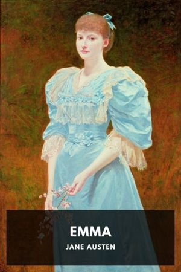

Jane Austen
1775–1817 · English novelist
Born at Steventon, Hampshire, the daughter of a clergyman. Her six novels, the first four published anonymously “By a Lady”, follow the marriages, money and manners of the English landed gentry with sharp irony. She died in Winchester at 41; Northanger Abbey and Persuasion appeared after her death.
Biography from Wikipedia · Read more
In your library

EmmaJane Austen PersuasionJane Austen
PersuasionJane Austen Pride and PrejudiceJane AustenFinished
Pride and PrejudiceJane AustenFinished Sense and SensibilityJane Austen
Sense and SensibilityJane Austen
Bibliography
- 1811Sense and SensibilityIn your library
- 1813Pride and PrejudiceFinished
- 1814Mansfield ParkNot in your library
- 1815EmmaIn your library
- 1817Northanger AbbeyNot in your library
- 1817PersuasionIn your library
- 1871Lady SusanNot in your library
Novels and novellas, by first publication. Bibliography and biography come from public sources; your library comes from Calibre.